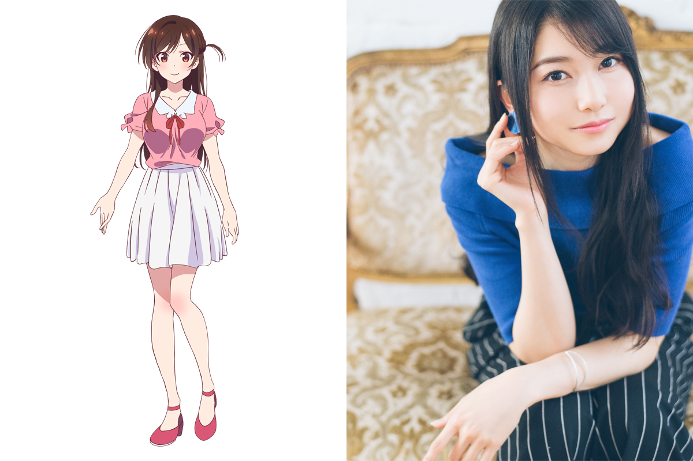
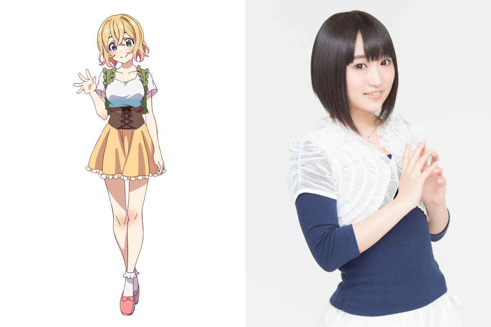
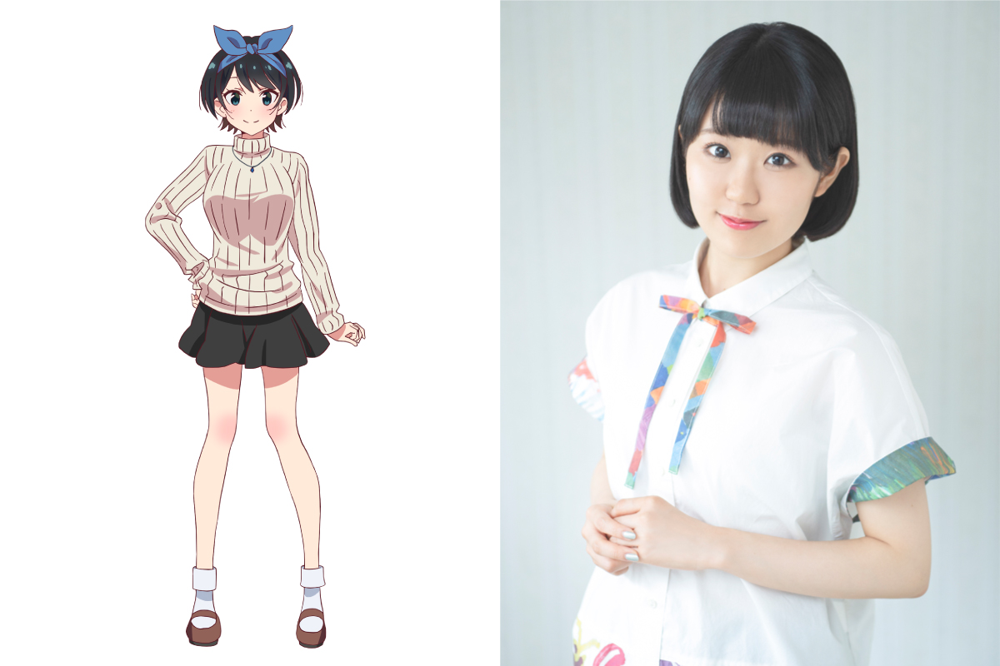
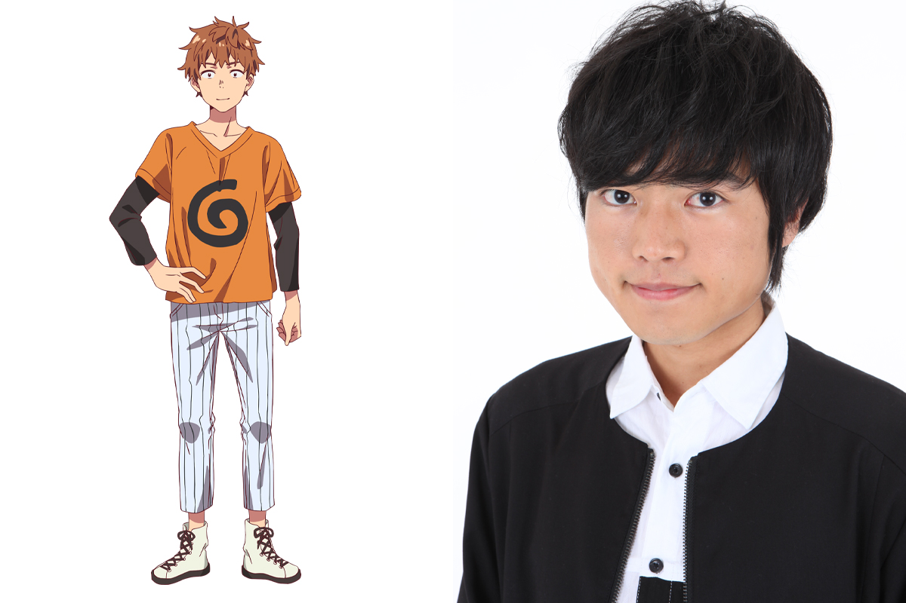

メインキャラクタービジュアル＆キャスト発表！
TVアニメ『彼女、お借りします』のメインキャラクタービジュアルとキャストを発表！
各キャストが本作の印象や自身の演じるキャラクターについて語った、キャストコメントも公開となりました。
水原千鶴（CV：雨宮 天）

【雨宮 天さんコメント】
『レンタル彼女』という心惹かれる言葉、そして美少女…！
主人公とレンタル彼女のキラキラしたストーリーなのかと思いきや、読み進めていくとそれ以上の面白さがあり、今から千鶴を演じさせていただくのがとても楽しみです！
和也には正直イライラしますが(笑)、和也も千鶴も人間らしいところがいいなと思いました。千鶴はプロ意識が高く仕事では完璧なヒロインですが、実は和也よりずっと男らしくて、その内面がとても素敵なキャラクターだと思いました。
仕事モードの女の子らしさと、男気ある気持ちのいい性格の素の部分どちらも、千鶴の魅力と受け取っていただけるように演じていきたいです！
七海麻美（CV：悠木 碧）

【悠木 碧さんコメント】
女同士の熾烈な争いが絶妙にリアルで面白いなと思いました。主人公が女の子に取り合われる作品はままあるものの、やり口がなかなかリアル。どの女の子も絶妙に面倒で、絶妙にかわいいですよね。
麻美は、あーー！こういう女いるーー！その男そのものに執着はないけどほかの女へのマウンティングとしてひと手間を欠かさない女いるーー！！ってなりました。公式ラスボス認定ヒロインとして、しっかり引っ掻き回せたらとおもいます。
更科瑠夏（CV：東山奈央）

【東山奈央さんコメント】
「レンタル彼女」という彼女代行サービスを利用したことで、冴えない学生生活を送っていた和也くんに訪れる非日常な日常、とても面白くてガーッと読み進めてしまいました。思春期の男の子らしい発想が面白かったり、可愛いすぎるヒロインたちにドキドキしたり…なかにはハッとさせられるような核心を突く言葉もあったりして、この先の展開が気になる作品ですね。
瑠夏ちゃんにとって和也くんは、ずっと探し続けていたたった１人の男性です。なので必死に、どこまでも一途に、和也くんに好きだという気持ちを伝えていきます。ちょっと強引だったり、すごい角度からのアピールもあるので、つねに目が離せない女の子ですね。想いが強いだけではなくて行動力もあるのが瑠夏ちゃんのすごいところなので、私もしっかり彼女にペースを合わせて好きを爆発させて演じていきたいと思っています。
桜沢 墨（CV：高橋李依）
【高橋李依さんコメント】
かわいい。ひたすらに可愛いです。しかもみんな可愛い。選べない。私だったら選べないですが、和也くんは彼女たち一人一人との関係性にしっかり軸があってカッコイイです。あと、とっても熱い。和也くん、いい男ですよね。彼女たちはもちろん、和也くんに幸せになって欲しいです。
緊張しいで、上手く言葉で伝えられない墨ちゃんですが、心の声はお喋りさんな印象です。
墨ちゃんの可愛らしさはもちろん、精一杯の一言や、ふとした息づかいに沢山の想いを感じ取っていただけるように頑張ります！
木ノ下和也（CV：堀江 瞬）

【堀江 瞬さんコメント】
和也と千鶴を取り巻く環境がテンポよく変化していく様子がとても小気味良く、読んでいてページをめくる手が止まらない作品だと思いました。このテンポ感がアニメでどうなるのか、僕自身もとても楽しみです！
普通に読んでいると和也は見栄っ張りで下心も感じるような、良くも悪くも男子大学生的思考の持ち主だと思いそうですが、だからこそ真っ直ぐな部分を大切にして、どこか憎み切れない男の子として思ってもらえるように頑張ります！